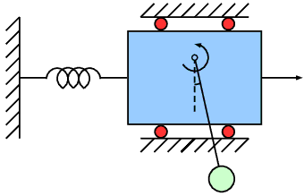

Translational Oscillations by a Rotational Actuator (TORA)
The TORA benchmark models a cart attached to a wall with a spring. The cart is free to move on a friction-less surface and has a weight attached to an arm, which is free to rotate about an axis. This serves as the control input to stabilize the cart at the origin $x = 0$ [JFK96].

We consider two different scenarios. In the first scenario, we have a safety specification. In the other scenario, we have a reachability specification.
using ClosedLoopReachability
import OrdinaryDiffEq, Plots, DisplayAs
using ReachabilityBase.CurrentPath: @current_path
using ReachabilityBase.Timing: print_timed
using ClosedLoopReachability: UniformAdditivePostprocessing, NoSplitter, LinearMapPostprocessing
using Plots: plot, plot!, lens!, bboxThe following option determines whether the verification settings should be used in the first scenario. The verification settings are chosen to show that the safety property is satisfied, which is expensive in this case. Concretely, we split the initial states into small chunks and run many analyses. Without the verification settings, the analysis is only run for a short time horizon.
const verification = false;Model
The model is four-dimensional. The dynamics are given by the following equations:
\[\begin{aligned} \dot{x}_1 &= x_2 \\ \dot{x}_2 &= -x_1 + 0.1 \sin(x_3) \\ \dot{x}_3 &= x_4 \\ \dot{x}_4 &= u \end{aligned}\]
vars_idx = Dict(:states => 1:4, :controls => 5)
@taylorize function TORA!(dx, x, p, t)
x₁, x₂, x₃, x₄, u = x
dx[1] = x₂
dx[2] = -x₁ + (0.1 * sin(x₃))
dx[3] = x₄
dx[4] = u
dx[5] = zero(u)
return dx
end;We are given three neural-network controllers. All controllers have 3 hidden layers of 100 neurons each, 6 inputs (the state variables), and 1 output ($u$). The output of the neural networks $N(x)$ needs to be normalized in order to obtain $u$.
Scenario 1
The controller uses ReLU activations in all layers, including the output layer. The output normalization is $u = N(x) - 10$. The control period is 1 time unit.
path = @current_path("TORA", "TORA_ReLU_controller.polar")
controller_ReLU = read_POLAR(path)
control_postprocessing1 = UniformAdditivePostprocessing(-10.0)
period1 = 1.0;Scenario 2
One controller has ReLU activations in all hidden layers and tanh activations in the output layer. The other controller has sigmoid activations in all layers, including the output layer. The output normalization is $u = 11 N(x)$. The control period is 0.5 time units.
path = @current_path("TORA", "TORA_ReLUtanh_controller.polar")
controller_relutanh = read_POLAR(path)
path = @current_path("TORA", "TORA_sigmoid_controller.polar")
controller_sigmoid = read_POLAR(path)
control_postprocessing2 = LinearMapPostprocessing(11.0)
period2 = 0.5;Specification
Scenario 1
The uncertain initial condition is $x_1 ∈ [0.6, 0.7], x_2 ∈ [−0.7, −0.6], x_3 ∈ [−0.4, −0.3], x_4 ∈ [0.5, 0.6]$.
X₀1 = Hyperrectangle(low=[0.6, -0.7, -0.4, 0.5], high=[0.7, -0.6, -0.3, 0.6])
U = ZeroSet(1);The initial-value problem is:
ivp1 = @ivp(x' = TORA!(x), dim: 5, x(0) ∈ X₀1 × U);The safety specification is to stay within the box $x ∈ [−2, 2]^4$ for a time horizon of 20 time units. A sufficient condition for guaranteed verification is to overapproximate the result with hyperrectangles.
safe_states = cartesian_product(BallInf(zeros(4), 2.0), Universe(1))
predicate1(sol, T) = overapproximate(sol, Hyperrectangle) ⊆ safe_states
T1 = 20.0 # time horizon
T1_warmup = 2 * period1 # shorter time horizon for warm-up run
T1_reach = verification ? T1 : T1_warmup; # shorter time horizon if not verifyingScenario 2
The uncertain initial condition is $x_1 ∈ [-0.77, -0.75], x_2 ∈ [-0.45, -0.43], x_3 ∈ [0.51, 0.54], x_4 ∈ [-0.3, -0.28]$.
X₀2 = Hyperrectangle(low=[-0.77, -0.45, 0.51, -0.3], high=[-0.75, -0.43, 0.54, -0.28])
U = ZeroSet(1);The initial-value problem is:
ivp2 = @ivp(x' = TORA!(x), dim: 5, x(0) ∈ X₀2 × U);The specification is to reach the goal region $x_1 ∈ [-0.1, 0.2], x_2 ∈ [-0.9, -0.6]$ within 5 time units. A sufficient condition for guaranteed verification is to overapproximate the result at the end with a hyperrectangle.
goal_states = cartesian_product(Hyperrectangle(low=[-0.1, -0.9], high=[0.2, -0.6]),
Universe(3))
predicate_set2(R) = overapproximate(R, Hyperrectangle) ⊆ goal_states
predicate2(sol, T) = all(predicate_set2(F[end]) for F in sol if T ∈ tspan(F))
T2 = 5.0 # time horizon
T2_warmup = 2 * period2; # shorter time horizon for warm-up runAnalysis
To enclose the continuous dynamics, we use a Taylor-model-based algorithm:
algorithm_plant_1 = TMJets(abstol=3e-2, orderT=3, orderQ=1);
algorithm_plant_2 = TMJets(abstol=2e-2, orderT=3, orderQ=1);To propagate sets through the neural network, we use the DeepZ algorithm. For verification, we also use an additional splitting strategy to increase the precision in scenario 1.
algorithm_controller = DeepZ();The verification benchmark is given below:
function benchmark(prob; T, splitter, algorithm_plant, predicate,
silent::Bool=false)
# Solve the controlled system:
silent || println("Flowpipe construction:")
res = @timed solve(prob; T=T, algorithm_controller=algorithm_controller,
algorithm_plant=algorithm_plant, splitter=splitter)
sol = res.value
silent || print_timed(res)
# Check the property:
silent || println("Property checking:")
res = @timed predicate(sol, T)
silent || print_timed(res)
if res.value
silent || println(" The property is satisfied.")
result = "verified"
else
silent || println(" The property may be violated.")
result = "not verified"
end
return sol, result
end;
function run(; scenario1::Bool, ReLUtanh_activations)
if scenario1
println("# Running analysis of scenario 1 with ReLU activations")
prob = ControlledPlant(ivp1, controller_ReLU, vars_idx, period1;
postprocessing=control_postprocessing1)
splitter = verification ? BoxSplitter([4, 4, 3, 5]) : NoSplitter()
algorithm_plant = algorithm_plant_1
predicate = predicate1
T = T1_reach
T_warmup = T1_warmup
else
splitter = NoSplitter()
algorithm_plant = algorithm_plant_2
predicate = predicate2
T = T2
T_warmup = T2_warmup
if ReLUtanh_activations
println("# Running analysis of scenario 2 with ReLUtanh activations")
prob = ControlledPlant(ivp2, controller_relutanh, vars_idx, period2;
postprocessing=control_postprocessing2)
else
println("# Running analysis of scenario 2 with sigmoid activations")
prob = ControlledPlant(ivp2, controller_sigmoid, vars_idx, period2;
postprocessing=control_postprocessing2)
end
end
# Run the verification benchmark:
benchmark(prob; T=T_warmup, splitter=splitter,
algorithm_plant=algorithm_plant, predicate=predicate, silent=true) # warm-up
res = @timed benchmark(prob; T=T, splitter=splitter,
algorithm_plant=algorithm_plant, predicate=predicate) # benchmark
sol, result = res.value
@assert (result == "verified") "verification failed"
println("Total analysis time:")
print_timed(res)
# Compute some simulations:
println("Simulation:")
if scenario1
res = @timed simulate(prob; T=T, trajectories=10, include_vertices=true)
else
res = @timed simulate(prob; T=T, trajectories=1, include_vertices=true)
end
sim = res.value
print_timed(res)
return sol, sim
end;Scenario 1
Run the verification benchmark:
sol_r, sim_r = run(scenario1=true, ReLUtanh_activations=nothing);# Running analysis of scenario 1 with ReLU activations
Flowpipe construction:
0.085114 seconds (833.63 k allocations: 46.173 MiB)
Property checking:
0.005220 seconds (47.31 k allocations: 2.953 MiB)
The property is satisfied.
Total analysis time:
0.096619 seconds (883.79 k allocations: 50.003 MiB, 0.00% compilation time)
Simulation:
0.606923 seconds (2.12 M allocations: 108.509 MiB, 0.00% compilation time)Scenario 2
Run the verification benchmark for the controller with sigmoid activations:
sol_sig, sim_sig = run(scenario1=false, ReLUtanh_activations=false);# Running analysis of scenario 2 with sigmoid activations
Flowpipe construction:
0.583381 seconds (4.20 M allocations: 231.628 MiB, 24.98% gc time)
Property checking:
0.000598 seconds (5.19 k allocations: 331.484 KiB)
The property is satisfied.
Total analysis time:
0.591294 seconds (4.20 M allocations: 232.829 MiB, 24.64% gc time, 0.00% compilation time)
Simulation:
0.096735 seconds (118.88 k allocations: 6.513 MiB, 0.00% compilation time)Run the verification benchmark for the controller with ReLU/tanh activations:
sol_rt, sim_rt = run(scenario1=false, ReLUtanh_activations=true);# Running analysis of scenario 2 with ReLUtanh activations
Flowpipe construction:
0.404724 seconds (3.63 M allocations: 201.794 MiB, 10.21% gc time)
Property checking:
0.000711 seconds (5.19 k allocations: 331.484 KiB)
The property is satisfied.
Total analysis time:
0.405718 seconds (3.64 M allocations: 202.844 MiB, 10.18% gc time)
Simulation:
0.011460 seconds (30.46 k allocations: 2.038 MiB)Results
Scenario 1
Preprocess the results:
solz = overapproximate(sol_r, Zonotope);Script to plot the results:
function plot_helper1(vars)
fig = plot()
plot!(fig, project(safe_states, vars); color=:lightgreen, lab="safe")
plot!(fig, solz; vars=vars, color=:yellow, lw=0, alpha=1, lab="")
plot!(fig, project(X₀1, vars); c=:cornflowerblue, alpha=1, lab="X₀")
plot_simulation!(fig, sim_r; vars=vars, color=:black, lab="")
return fig
end;Plot the results:
vars = (1, 2)
fig = plot_helper1(vars)
plot!(fig; xlab="x₁", ylab="x₂")
# Plots.savefig(fig, "TORA-ReLU-x1-x2.png") # command to save the plot to a file
fig = DisplayAs.Text(DisplayAs.PNG(fig))
vars = (3, 4)
fig = plot_helper1(vars)
plot!(fig; xlab="x₃", ylab="x₄")
# Plots.savefig(fig, "TORA-ReLU-x3-x4.png") # command to save the plot to a file
fig = DisplayAs.Text(DisplayAs.PNG(fig))
Scenario 2
Script to plot the results:
function plot_helper2(sol, sim)
vars = (1, 2)
fig = plot()
plot!(fig, project(goal_states, vars); color=:cyan, lab="goal")
plot!(fig, sol; vars=vars, color=:yellow, lw=0, alpha=1, lab="")
plot!(fig, project(X₀2, vars); c=:cornflowerblue, alpha=1, lab="X₀")
plot_simulation!(fig, sim; vars=vars, color=:black, lab="")
plot!(fig; xlab="x₁", ylab="x₂")
return fig
end;Plot the results:
fig = plot_helper2(sol_sig, sim_sig)
lens!(fig, [-0.785, -0.735], [-0.47, -0.41]; inset=(1, bbox(0.2, 0.4, 0.2, 0.2)),
lc=:black, xticks=[-0.77, -0.75], yticks=[-0.45, -0.43], subplot=3)
lens!(fig, [0.09, 0.22], [-0.9, -0.8]; inset=(1, bbox(0.6, 0.4, 0.2, 0.2)),
lc=:black, xticks=[0.1, 0.2], yticks=[-0.9, -0.8], subplot=3)
# Plots.savefig(fig, "TORA-sigmoid.png") # command to save the plot to a file
fig = DisplayAs.Text(DisplayAs.PNG(fig))
fig = plot_helper2(sol_rt, sim_rt)
lens!(fig, [-0.785, -0.735], [-0.47, -0.41]; inset=(1, bbox(0.2, 0.4, 0.2, 0.2)),
lc=:black, xticks=[-0.77, -0.75], yticks=[-0.45, -0.43], subplot=3)
lens!(fig, [0.0, 0.25], [-0.85, -0.7]; inset=(1, bbox(0.6, 0.4, 0.2, 0.2)),
lc=:black, xticks=[0, 0.2], yticks=[-0.8, -0.7], subplot=3)
# Plots.savefig(fig, "TORA-ReLUtanh.png") # command to save the plot to a file
fig = DisplayAs.Text(DisplayAs.PNG(fig))